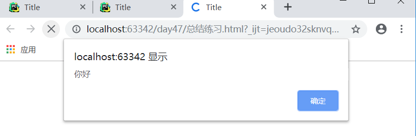
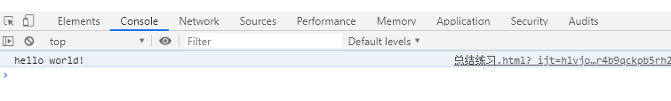
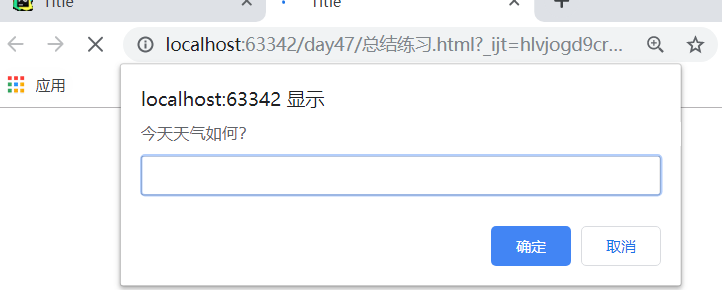
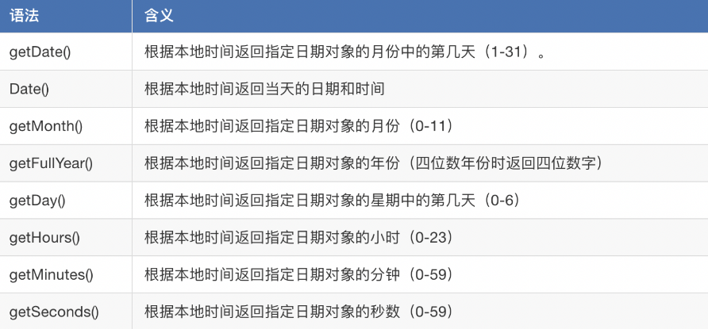

目录
<!DOCTYPE html>
<html lang="en">
<head>
<meta charset="UTF-8">
<title>Title</title>
</head>
<body>
<!--行内js-->
<p id="" class="" style="" onclick="console.log(2);">mjj</p>
<!--内嵌-->
<script type="text/javascript">
//js代码
</script>
<script type="text/javascript" src="js/index.js"></script>
</body>
</html>用途：弹出警告框。
<script>
alert('你好')
</script>
JavaScript对换行，缩进，空格不敏感。
单行注释(ctrl +/)
//我是单行注释多行注释（ctrl+shift+/）
/*
多行注释1
多行注释2
*/控制台输出。
<script>
console.log('hello world!');
</script>
弹出能够让用户输入的对话框
<script>
prompt('今天天气如何？')
</script>
prompt()语句中，用户不管输入什么内容，都是字符串。
alert和prompt的区别
alert('今天天气如何？');//直接使用，不需要变量
var a = prompt("请输入一个数字");//必须用一个变量，来接收用户输入值var a = 100;
console.log(a);//输出100变量名有命名规范：只能由英语字母、数字、下划线、美元符号$构成，且不能以数字开头，并且不能是JavaScript保留字，如下：
abstract、boolean、byte、char、class、const、debugger、double、enum、export、extends、final、float、goto
implements、import、int、interface、long、native、package、private、protected、public、short、static、super、synchronized、throws、transient、volatile<script>
var a= 100;
console.log(typeof a);
</script>
//number <script>
var a = "abcde";
var c= '1234';
var d = '哈哈';
var e = ''; //空字符串
console.log(typeof a);//string
console.log(typeof c);//string
console.log(typeof d);//string
console.log(typeof e);//string
</script>为JS中的Boolean的值也只有2中：true和false。他们通常被用于在适当的代码之后，测试条件是否成立，比如 3 > 4。这是个表达式，我们都知道3是不会大于4的，所以返回了false。
3>4;//false
4>=3;//true通过+拼接：
<script>
console.log('我'+"爱"+"吃"+"饭")
</script>
//我爱吃饭通过$和tab上面键拼接
<script>
var name = 'jk' , age = 20;
var str = `${name}今年是${age}岁数了`;
console.log(str);
</script>
//jk今年是20岁数了Javascript有一套可用的全功能的数学功能，接下来我们就重点来学习Javascript中的数学运算吧。
算数运算符
| 运算符 | 名称 | 作用 | 示例 |
|---|---|---|---|
+ |
加法 | 两个数相加。 | 6 + 9 |
- |
减法 | 从左边减去右边的数。 | 20 - 15 |
* |
乘法 | 两个数相乘。 | 3 * 7 |
/ |
除法 | 用右边的数除左边的数 | 10 / 5 |
% |
求余(有时候也叫取模) | 在你将左边的数分成同右边数字相同的若干整数部分后，返回剩下的余数 | 8 % 3(返回 2，将8分成3份，余下2 。) |
5 + 4 * 3;
num % 8 *num;运算符优先级
Javascript中的运算符优先级与数学运算符优先级相同—乘法和除法总是先完成，然后再算加法和减法。
递增和递减运算
var x = 3;
x++;//相当于x = x + 1| 运算符 | 名称 | 作用 | 示例 | 等价于 |
|---|---|---|---|---|
+= |
递增赋值 | 右边的数值加上左边的变量，然后再返回新的变量。 | x = 3;x += 4; |
x = 3;x = x + 4; |
-= |
递减赋值 | 左边的变量减去右边的数值，然后再返回新的变量。 | x = 6;x -= 3; |
x = 6;x = x - 3; |
*= |
乘法赋值 | 左边的变量乘以右边的数值，然后再返回新的变量。 | x = 2;x *= 3; |
x = 2;x = x * 3; |
/= |
除法赋值 | 左边的变量除以右边的数值，然后再返回新的变量。 | x = 10;x /= 5; |
x = 10;x = x / 5; |
//第一题：
<script>
var a = 4;
var c = a ++;
console.log(c);//4
console.log(a);//5
</script>
//先让a的值赋值给c,再对a++
//第二题：
<script>
var a = 4;
var c = ++a;
console.log(c);//5
console.log(a);//5
</script>
//想让a加法运算，再将a赋值给c
//第三题：
<script>
var a = 2;
var b = '2';
console.log(a == b);//true
console.log(a === b); //false
</script>
//== 比较的是值 console自动将a转换字符串进行比较，===比较是值和数据类型。数字转字符串
<script>
var myNum = "" +234;
console.log(typeof myNum);
</script>
//stringvar myNum = 123;
var myStr = myNum.toString();
var num = 1233.006;
// 强制类型转换
console.log(String(num));
console.log(num.toString());
// 隐式转换
console.log(''.concat(num));
// toFixed()方法会按照指定的小数位返回数值的字符串 四舍五入
console.log(num.toFixed(2));字符串转数字
<script>
var myStr = '123';
var myNum = Number(myStr);
console.log(typeof myNum);
</script>
//number
var str = '123.0000111';
console.log(parseInt(str));//123
console.log(typeof parseInt(str));//number
console.log(parseFloat(str));//123.0000111
console.log(typeof parseFloat(str));//number
console.log(Number(str));//123.0000111var shop = ['apple','milk','banana','orange']shop[0];//访问数组
shop[0] = 'pen'；shop.length;语法：
if (判断条件) {
//结果1
}else{
//结果2
}var weather = 'sunny';
if(weather == 'sunny'){
//天气非常棒，可以出去玩耍了
}else if(weather == 'rainy'){
//天气下雨了，只能在家里呆着
}else if(weather == 'snowing'){
//天气下雪了，可以出去滑雪了
}var weather = 'sunny';
if(weather == 'sunny'){
if(temperature > 30){
//还是在家里吹空调吧
}else if(temperature<=30){
//天气非常棒，可以出去玩耍了
}
}&& — 逻辑与; 使得并列两个或者更多的表达式成为可能，只有当这些表达式每一个都返回true时，整个表达式才会返回true.|| — 逻辑或; 当两个或者更多表达式当中的任何一个返回 true 则整个表达式将会返回 true.var mathScore = 88;
var enlishScore = 90;
if(mathScore > 70 || enlishScore > 95){
console.log('才可以玩游戏');
}else{
console.log('在家里写作业');
}var weather = 'sunny';
switch(weather){
case 'sunny':
//天气非常棒，可以出去玩耍了
break;
case 'rainy':
//天气下雨了，只能在家里呆着
break;
case 'snowing':
//天气下雪了，可以出去滑雪了
break;
default:
//哪里也不出去
}(codition) ? run this code : run this code instead;<script>
var a = '';
(1 > 2)? a='真的' : a='假的';
console.log(a)
</script>
//假的for (初始化条件;结束条件;递增条件){
run this code
}示例：
<script>
var total = 0;
var i;
for (i = 1;i <= 1000; i++){
total = total + i;
}
console.log(total);//500500
</script>for循环的3个条件都是可以省略的，如果没有退出循环的判断条件，就必须使用break语句退出循环，否则就是死循环：
<script>
var x = 0;
for (;;){
if (x>100) {
break;
}
x ++;
console.log(x)
}
</script>
//1.....101continue语句中断循环中的迭代,如果出现了指定的条件,然后继续循环中的下一个迭代。
<script>
var x;
for (var i = 0; i<=10; i++){
if (i==3) continue;
x ='这个数字是' + i;
console.log(x)
}
</script>
//这个数字是0......这个数字是10Javascript中的另一种循环则是while循环，使用它最佳。
语法：
while (判断循环结束条件){
//code to run
递增条件
}示例：
<script>
var a = 1;
while (a <=100){
console.log(a);
a += 1;
}
</script>
//1 2 3 .....100最后一种循环是do { ... } while()循环，它和while循环的唯一区别在于，不是在每次循环开始的时候判断条件，而是在每次循环完成的时候判断条件：
var n = 0;
do {
n = n + 1;
} while (n < 100);
n; // 100用do { ... } while()循环要小心，循环体会至少执行1次，而for和while循环则可能一次都不执行。
一个函数定义(也称为函数声明，或函数语句)由一些列的function关键字组成。例如，以下代码是一个简单的计算多组数的和的函数，我们给它命名为sum。
function sum(a,b) {
//函数体
}函数定义好后，它是不能自动执行的，需要调用它，直接在需要的位置写函数名。
<script>
function sum(a,b){
console.log(a+b);
}
sum(3,5);
</script>如果向在定义函数时添加多个形参。可以在后面添加多个，注意参数之间用逗号隔开。
我们在计算两个数之和的时候，可以给函数一个返回值，每次调用该函数，你就能计算出两个数之和。
<script>
function sum(a,b){
return a+b
}
var result = sum(3,5);
console.log(result);
</script>虽然上面的函数定义在语法上是一个语句，但函数可以由函数表达式创建。这样的函数可以是匿名的;它不必有一个名称。例如，函数sum也可以这样去定义：
var sum = function(a,b){
return a + b;
}
sum(4,5);处理函数时，作用域是非常重要的一个概念。当你创建函数时，函数内定义的变量和其它东西都在它们自己的单独的范围内，意味着它们被锁在自己独立的房间内。
所有的函数的最外层被称为全局作用域。在全局作用域内定义的值可以任意地方访问。
<!-- my HTML file -->
<script src="first.js"></script>
<script src="second.js"></script>
<script>
hello();
</script>//first.js
var name = 'Tom';
function hello() {
alert('Hello ' + name);
}//second.js
var name = 'Jack';
function hello() {
alert('Hello ' + name);
}hello()形式调用，但是你只能访问到 second.js文件的hello()函数。second.js 在源代码中后应用到HTML中，所以它的变量和函数覆盖了 first.js 中的。我们称为这种行为叫代码冲突。例题：
function fn() {
switch (arguments.length){
case 2:
console.log('2个参数');
break;
case 3:
console.log('3个参数');
console.log(arguments);//Arguments(3) [2, 3, 4, callee: ƒ, Symbol(Symbol.iterator): ƒ]
break;
default:
break;
}
}
fn(2,3);//2个参数
fn(2,3,4);//3个参数
//arguments对象在函数中引用函数的参数。此对象包含传递给函数的每个参数.
//arguments对象不是一个 Array 。它类似于Array，但除了length属性和索引元素之外没有任何Array属性。function myBigFunction() {
var myValue = 1;
subFunction1(myValue);
subFunction2(myValue);
subFunction3(myValue);
}
function subFunction1(value) {
console.log(value);
}
function subFunction2(value) {
console.log(value);
}
function subFunction3(value) {
console.log(value);
}函数自执行
（function(){
//代码
})();对象属性：它是属于这个对象的某个变量。比如字符串的长度、数组的长度和索引、图像的宽高等。
对象的方法：只有某个特定属性才能调用的函数。表单的提交、时间的获取等。
对象的创建方式：
对象字面量是对象定义的一种简写形式，目的在于简化创建包含大量属性的对象的过程。
<script>
var person = {
name : 'xjk',
age : 22,
fav :function() {
console.log('学JS')
}
};
person.fav();//学JS
console.log(person.name);//22
</script>var person = {};//与new Object()相同
var obj2 = new Object();<script>
var person = {};
person.name='xjk';
person.fav = function(){
console.log(this)
};
person.fav();//{name: "xjk", fav: ƒ}
console.log(person.name);//xjk
</script>//set get 用法：
//1、get与set是方法，因为是方法，所以可以进行判断。
//2、get是得到 一般是要返回的 set 是设置 不用返回
//3、如果调用对象内部的属性约定的命名方式是_age
var my = {
name:'jk',
work:function () {
console.log('working');
},
_age:22,
get age(){
return this._age;
},
set age(val){
if (val<0 || val>100) {
throw new Error('invalid value')
}else{
this._age = val;
}
}
};
console.log(my.age);//22
my.age = 18;
console.log(my.age);//18
my.age = 200;
console.log(my.age);//Uncaught Error: invalid valueperson['name'];ECMAScript6：
<script>
class Person{
constructor(name,age){
//初始化相当于python__init__,this相当于self
this.name = name;
this.age = age;
}
fav(){
console.log(this.name);
}
}
var p = new Person('mjj',18);
p.fav();
</script>
//与python相似例题：
var obj = {};
obj.name = 'mjj';
obj.fav = function(){
//obj
console.log(this);
};
console.log(this);
//Window {postMessage: ƒ, blur: ƒ, focus: ƒ, close: ƒ, parent: Window, …}全局的。
function add(x,y) {
console.log(this.name);
console.log(x);
console.log(y);
}
add.call(obj,1,2);
//obj传入add 函数，给this赋予局部函数，为obj.name，调用obj对象的name并打印。
add.apply(obj,[1,2]);
//apply 与call相似，第二个参数传入必须为数组
//匿名函数
(function () {
console.log(this);
})();
//window注意：首先要了解JS里的this对象，this对象是在运行时基于函数的执行环境绑定的，在全局函数中，this等于window，而当函数作为某个对象例如A的方法B被调用时，this等于A对象，这里有个例外，匿名函数的执行环境具有全局性，因此匿名函数的this对象通常指向window。用一句话总结，就是谁调用this，谁就被引用。
<script>
var name = 'wusir';
(function () {
console.log(this.name);
})();
</script>
//wusir练习题：
<script>
var name = 'window';
var obj = {
name:'my obj',
getname:function () {
var name = 'inner name';
return this.name;
}
};
alert(obj.getname());
</script>
//my obj
//谁调用this，谁就被引用。apply:方法能劫持另外一个对象的方法，继承另外一个对象的属性. Function.apply(obj,args)方法能接收两个参数 obj：这个对象将代替Function类里this对象 args：这个是数组，它将作为参数传给Function（args-->arguments）call:和apply的意思一样,只不过是参数列表不一样. Function.call(obj,[param1[,param2[,…[,paramN]]]]) obj：这个对象将代替Function类里this对象
var colors = new Array();var colors = [];<script>
var colors = ['red','green','blue'];
if (Array.isArray(colors)){
console.log("是数组")
}
</script>
//是数组数组中每个值得字符串形式拼接。
<script>
var colors = ['red','green','blue'];
alert(colors.toString());
</script>
//red,green,blue分割字符串
<script>
var colors = ['red','green','blue'];
res = colors.join("|");
console.log(res);
</script>
//red|green|blue <script>
var colors = ['red','green','blue'];
colors.push('yellow','black');
console.log(colors);
</script>
//["red", "green", "blue", "yellow", "black"]<script>
var colors = ['red','green','blue'];
res = colors.pop();//res = 'blue'
console.log(colors);
</script>
//["red", "green"]队列数据结构的访问规则是 FIFO(First-In-First-Out， 先进先出)。队列在列表的末端添加项，从列表的前端移除项。
shift()
<script>
var colors = ['red','green','blue'];
var item = colors.shift();
alert(item);
</script>
//redunshift()
var colors = [];
var count = colors.unshift('red','green'); //推入两项
alert(count); //2
console.log(colors); // ["red", "green"]反转数组。
var values = [1,2,3,4];
values.reverse();
alert(values);
//4,3,2,1方法按升序排列
sort()方法按升序排列——即最小的值位于最前面，最大的值排在最后面。 为了实现排序，sort()方法会调用每个数组项的toString()转型方法，然后比较得到的字符串，以确定如何排序 。即使数组中的每一项都是数值，sort()方法比较的也是字符串。var values = [0,1,5,10,15];
varlus.sort();
alert(values); //0,1,10,15,5
//可见，即使例子中值的顺序没有问题，但 sort()方法也会根据测试字符串的结果改变原来的顺序。 因为数值 5 虽然小于 10，但在进行字符串比较时，”10”则位于”5”的前面，于是数组的顺序就被修改了。 不用说，这种排序方式在很多情况下都不是最佳方案。var colors = ['red','blue','green'];
colors.concat('yello');//["red", "blue", "green", "yello"]
colors.concat({'name':'张三'});//["red", "blue", "green", {…}]
colors.concat({'name':'李四'},['black','brown']);// ["red", "blue", "green", {…}, "black", "brown"]slice()方法，它能够基于当前数组中一个或多个项创建一个新数组。slice()方法可以接受一或两个参数，既要返回项的起始和结束位置。
var colors = ['red','blue','green','yellow','purple'];
colors.slice(-2,-1);//["yellow"]
colors.slice(-1,-2);//[]
//解析colors.slice(-2,-1) 等于colors.slice(3,4)，都加colors.length.此时为5.用于数组删除，插入，替换。
//1.删除：可以删除任意数量的项，只需指定2个参数：要删除的第一项的位置和要删除的个数。例如splice(0,2)会删除数组中的前两项。
<script>
var colors = ['red','blue','green','yellow','purple'];
colors.splice(0,2);
console.log(colors);//["green", "yellow", "purple"]
</script>
//2.插入：可以向指定位置插入任意数量的项，只需提供3个参数：起始位置、0（要删除的个数）和要插入的项。如果要插入多个项，可以再传入第四、第五、以至任意多个项。例如，splice(2,0,'red','green')会从当前数组的位置2开始插入字符串'red'和'green'。
<script>
var colors = ['red','blue','green','yellow','purple'];
colors.splice(2,0,'red','green');
console.log(colors);//["red", "blue", "red", "green", "green", "yellow", "purple"]
</script>
//3.替换：可以向指定位置插入任意数量的项，且同时删除任意数量的项，只需指定 3 个参数:起始位置、要删除的项数和要插入的任意数量的项。插入的项数不必与删除的项数相等。例如，splice (2,1,"red","green")会删除当前数组位置 2 的项，然后再从位置 2 开始插入字符串"red"和"green"。
<script>
var colors = ['red','blue','green','yellow','purple'];
colors.splice(2,1,'red','green');
console.log(colors);//["red", "blue", "red", "green", "yellow", "purple"]
</script>indexOf()和 lastIndexOf()。这两个方法都接收两个参数:要查找的项和(可选的)表示查找起点位置的索引。其中，indexOf()方法从数组的开头(位置 0)开始向后查找，lastIndexOf()方法则从数组的末尾开始向前查找。在没找到的情况下返回-1.
<script>
var num = [1,2,3,4,5,4,3,2,1];
alert(num.indexOf(4));//3 查找值为4的索引为3
</script>
<script>
var num = [1,2,3,4,5,4,3,2,1];
// alert(num.indexOf(4));//3 查找值为4的索引为3
alert(num.lastIndexOf(4));//5 从后开始查找值为4的 索引为5（索引还是从前面开始算）
</script>
<script>
var num = [1,2,3,4,5,4,3,2,1];
alert(num.indexOf(4,4));//5 第一个参数要查找的值4，第二个参数为规定在字符串中开始检索的位置,从4好位置开始查找
// alert(num.lastIndexOf(4));//5 从后开始查找值为4的 索引为5（索引还是从前面开始算）
</script>
filter()函数，它利用指定的函数确定是否在返回的数组中包含某一项。
var numbers = [1,2,3,4,5,4,3,2,1];
var filterResult = numbers.filter(function(item, index, array){
return (item > 2);
});
alert(filterResult); //[3,4,5,4,3]map方法
var numbers = [1,2,3,4,5,4,3,2,1];
var filterResult = numbers.map(function(item, index, array){
return item * 2;
});
alert(filterResult); //[2,4,6,8,10,8,6,4,2]forEach()方法
<script>
var num = [1,2,3,4,5,4,3,2,1];
var res = num.forEach(function(item,index,array){
console.log(index,item);
});
</script>
/*
第一个索引index，第二个值item
0 1
1 2
2 3
3 4
4 5
5 4
6 3
7 2
8 1
*/var stringValue = "hello world";
alert(stringValue.length); //"11"这两个方法都接收一个 参数，即基于 0 的字符位置。其中，charAt()方法以单字符字符串的形式返回给定位置的那个字符。
<script>
var stringValue = "hello world";
alert(stringValue.charAt(1));//'e'
</script>
var stringValue = "hello world";
alert(stringValue.charCodeAt(1)); //输出"101" 当前字符编码用于将一或多个字符串拼接起来， 返回拼接得到的新字符串.concat可以接收任意多个参数。
<script>
var stringValue = "hello ";
var result = stringValue.concat("world",'!');
alert(result);//hello world!
</script>
slice() substr() substring()
与 concat()方法一样，slice()、substr()和 substring()也不会修改字符串本身的值——它们只是 返回一个基本类型的字符串值，对原始字符串没有任何影响。
var stringValue = "hello world";
alert(stringValue.slice(3));//"lo world"
alert(stringValue.substring(3));//"lo world"
alert(stringValue.substr(3));//"lo world"
alert(stringValue.slice(3, 7));//"lo w"
alert(stringValue.substring(3,7));//"lo w"
alert(stringValue.substr(3, 7));//"lo worl"有两个可以从字符串中查找子字符串的方法:indexOf()和 lastIndexOf()。这两个方法都是从 一个字符串中搜索给定的子字符串，然后返回子字符串的位置(如果没有找到该子字符串，则返回-1)。
var stringValue = "hello world";
alert(stringValue.indexOf("o")); //4
alert(stringValue.lastIndexOf("o")); //7
alert(stringValue.indexOf("o", 6)); //7
alert(stringValue.lastIndexOf("o", 6)); //4trim()方法,删除字符串的前后空格.
var stringValue = " hello world ";
var trimmedStringValue = stringValue.trim();
alert(stringValue); //" hello world "
alert(trimmedStringValue); //"hello world"var stringValue = "hello world";
alert(stringValue.toLocaleUpperCase()); //"HELLO WORLD"
alert(stringValue.toUpperCase()); //"HELLO WORLD"
alert(stringValue.toLocaleLowerCase()); //"hello world"
alert(stringValue.toLowerCase()); //"hello world"
var date = new Date();
console.log(date);
//Mon Jun 03 2019 23:51:28 GMT+0800 (中国标准时间)
console.log(date.getDate());
//3 根据本地时间返回本月第几天
console.log(date.getMonth()+1);
//6 根据本地时间返回第几月
console.log(date.getFullYear());
//2019 返回年
console.log(date.getDay());
// 星期几
console.log(date.getHours());
//几时
console.log(date.getMinutes());
//几分
console.log(date.getSeconds());
//几秒
console.log(date.toLocaleString());
//2019/6/3 下午11:56:00var weeks = ['星期天','星期一','星期二','星期三','星期四','星期五','星期六'];
var date = new Date();
console.log(weeks[date.getDay()]);
var day = weeks[date.getDay()];
document.write(`<a href="#">${day}</a>`);
<h2 id="time"></h2>
<script>
var timeObj = document.getElementById('time');
console.log(time);
function getNowTime() {
var time = new Date();
var hour = time.getHours();
var minute = time.getMinutes();
var second = time.getSeconds();
var temp = "" + ((hour > 12) ? hour - 12 : hour);
if (hour == 0) {
temp = "12";
}
temp += ((minute < 10) ? ":0" : ":") + minute;
temp += ((second < 10) ? ":0" : ":") + second;
temp += (hour >= 12) ? " P.M." : " A.M.";
timeObj.innerText = temp;
}
setInterval(getNowTime, 20)
</script>var color = "red";
function sayColor(){
alert(window.color);
}
window.sayColor(); //"red"var max = Math.max(3,54,32,16);
alert(max);//54
var min = Math.min(3,54,32,16);
alert(min);//3var values = [1,2,36,23,43,3,41];
var max = Math.max.apply(null, values);
console.log(max);<script>
var a = 1.523;
console.log(Math.ceil(a));//2
console.log(Math.floor(a));//1
console.log(Math.round(a));//2
</script>方法返回大于等于 0 小于 1 的一个随机数
生成100~400随机整数
<script>
function random(min,max){
return min +Math.floor(Math.random()*(max-min));
}
var res = random(100,400);
console.log(res);
</script>